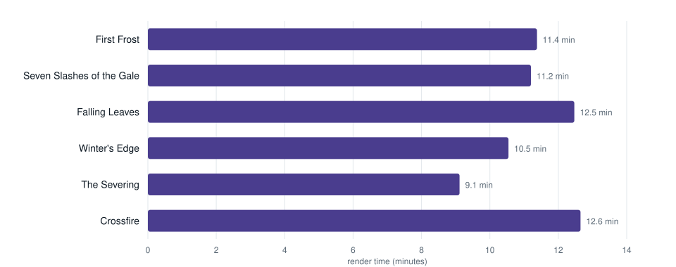

Hollow devlog · Nov 18, 2026
Render Times and Hardware
How long the choreography engine fight films take to render, and the machine they render on.
Device
- Machine: Mac mini (Mac18,5)
- Chip: Apple M6. 12-core CPU (2 Super, 4 Performance, 6 Efficiency), 12-core GPU, Metal 4
- Memory: 16 GB
- OS: macOS 27.0
- Renderer: Blender 5.3, EEVEE, 24 samples, 1920×1080, 30 fps
Render times
| Film | Frames | Length | Render | Per frame |
|---|---|---|---|---|
| First Frost | 727 | 24.2 s | 11.4 min | 0.94 s |
| Seven Slashes of the Gale | 670 | 22.3 s | 11.2 min | 1.00 s |
| Falling Leaves | 783 | 26.1 s | 12.5 min | 0.96 s |
| Winter's Edge | 704 | 23.5 s | 10.5 min | 0.90 s |
| The Severing | 556 | 18.5 s | 9.1 min | 0.98 s |
| Crossfire | 805 | 26.8 s | 12.6 min | 0.94 s |
| Total | 4245 | 2.4 min | 67 min | 0.95 s |

- About 1 second per finished 1080p frame, or roughly 29 minutes of rendering per minute of film.
- Frames render in 3 Blender processes at once. On this machine 3 is 1.4× faster than 1; 2 gains nothing and 4 is no faster than 3. The process count is capped by memory, at about 1.5 GB each.
- Encoding the frames and sound to MP4 adds 15–20 s per film.
- Times are measured from the first to the last rendered frame. Solving the fight and baking cloth beforehand are not included.